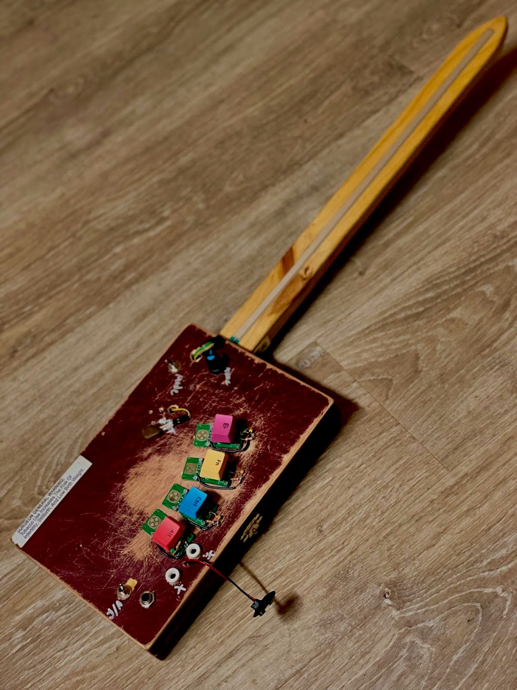

One-plantAnimal
Surgeon General (2023-2024)
There is something romantic about the synth-guitar form factor that attempts to marry traditional string instrument techniques with electronic engines. Surgeon General is an attempt at such a marriage, featuring a SoftPot linear potentiometer along the neck for continuous pitch control, a phase locked loop (PLL) frequency multiplier circuit for the ancient approach of harmonic just intonation, a pressure sensitive resistor for dynamics, exposed nodes for circuit bending "extended techniques," and a quaint cigar box guitar inspired construction. Four buttons allow the user to pick out one of any of the 8th through 22nd harmonics relative to the fundamental note determined by the linear potentiometer. This relatively high-harmonics purely overtone capability is meant to faccilitate playing based on Zhea Erose's theory of Primodality. A switch activates a low register bass mode in which the PLL is deactivated and the buttons give slight timbral variation instead of notes selection. All nodes of the PLL chip are accessible from the surface of the instrument through current limiting resistors, allowing the player to safely scramble the circuit's innards eliciting a cornucopia of raucous squelching and squealing.

Figure 1. Surgeon General.
solo 1
multitrack 1
multitrack 2
bass mode
bending
Gourcante (2023)
Another SoftPot lute like the Surgeon General, the Gourcante borrows a solar touch sensitive speaker amplifier from Peter Blasser's Tocantes, as described in his Masters Thesis Stores at the Mall.
The Gourcante sound generating circuit is two cross couple CMOS ring oscillators, motivated by the idea that injection pulling might act as a sort of "soft-autotune," encouraging rational frequency ratios.
In practice, we see everything from pulling and locking to frequency hysteresis, which makes the instrument incredibly unruly and difficult to intonate intentionally.
This is similar to the phenomena of Jump Resonance, and the complicated frequency hysteresis exhibited Bernie Hutchins' "Responding Filter Bank" (discussed in Electronotes #91 and #74 respectively).

Figure 2. Gourcante.